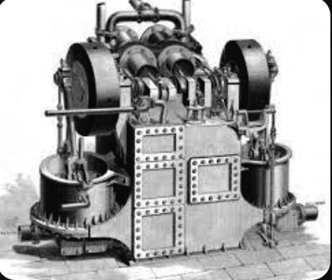

Hello everyone, today I will be talking about the unforgettable Willis Carrier.
_____________________________________________________________________________________________________________________________
| Now a lot of you here might not know who this is. But everyone loves him no matter who you are, |
| what he did was create the first Air-Conditioning unit. And in today's age, that is very needed |
| since it is reaching over 100 easily every day in the summer, kids need to come indoors to cool off and enjoy some water. |
-----------------------------------------------------------------------------------------------------------------------------
___________________________________________________________________ |This here is the creator standing next to the first machine that,|
| will change drastically over the course of time. | -------------------------------------------------------------------
________________________________________________________ |Hello this picture above me is an accurate adaptation,|
|of what the first air conditioning system looked like.| --------------------------------------------------------

This is going to be a close timeline of how the Air-Conditioning system has evolved over time.
Year
Air Conditioning System
1902
First Air Conditioning System,
The name for this was called "Apparatus for Treating Air."
1932
The runner up to that was another called "Window Air Conditioner"
1950
The "Split Air Conditioner" was made around the 50s' and was still popular in the 70s'
1970
The "Ductless Mini-Split System" was just a smaller and newer system
1980
The "Variable Refrigerant Flow or "VRF" was made in japan
If you would like to learn more on air conditioning click Here